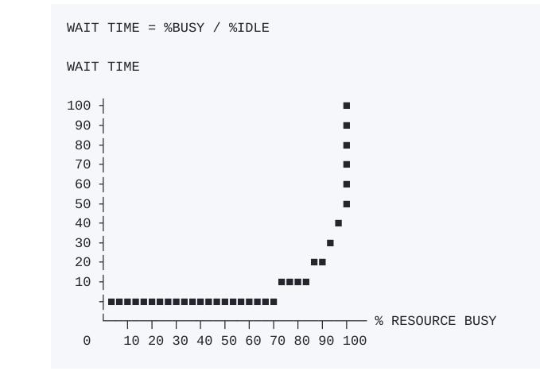

The Phenoix Project
A novel by Gene Kim, Kevin Behr, and George Spafford
The Phoenix Project: A Novel About IT, DevOps, and Helping Your Business Win" is a widely acclaimed book co-authored by Gene Kim, Kevin Behr, and George Spafford. It was first published in 2013 and has since become a seminal work in the fields of IT management and DevOps.
Synopsis
The book is structured as a novel and follows the story of Bill Palmer, an IT manager at Parts Unlimited, a fictional company. Bill is unexpectedly promoted to VP of IT Operations just as the company is about to launch the Phoenix Project, a major initiative intended to save the business. However, the project is in chaos, with frequent outages, missed deadlines, and increasing pressure from upper management.
Key Themes
- IT and Business Alignment
- DevOps Practices
- The Three Ways
- Work Prioritization and Flow
Impact and Reception
"The Phoenix Project" has had a significant impact on the IT and DevOps communities, providing a relatable and engaging way to understand complex concepts. It has been praised for making technical topics accessible through its narrative style and has been used as a textbook in many organizations to drive IT transformation.
Practical Lessons
The novel provides practical lessons on:
- Identifying bottlenecks and inefficiencies in IT processes.
- Implementing DevOps practices to improve collaboration between development and operations teams.
- Managing large-scale IT projects and recovering failing ones.
- Developing a culture that encourages innovation, learning, and improvement.
Conclusion
Overall, "The Phoenix Project" serves as both an educational tool and an inspirational story for IT professionals, managers, and anyone interested in understanding how to leverage IT for business success. It shows that with the right approach, even the most chaotic IT environment can be transformed into a well-oiled machine that supports and drives business objectives.
About the Story
Change definition
A "change" is any activity that is physical, logical, or virtual to applications, databases, operating systems, networks, or hardware that could impact services being delivered.
Bottlenecks
Work shouldn't be released based on the availability of the first station. Instead, it should be based on the tempo on how quickly the bottleneck resource can consume the work.
On the Theory of Constraints, any improvements made anywhere besides the bottleneck are an illusion. Any improvement made after the bottleneck is useless, because it will always remain starved, waiting for work from the bottleneck. And any improvements made before the bottleneck merely results in more inventory pilling up at the bottleneck.
Indispensable People
Maybe some part of them are reluctant to share the knowledge they have. So they made themselves virtually impossible to replace.
Indispensable people work as constraints to the business. Every time you let these people fix something that nobody else can replicate, these people get smarter and the entire system gets dumber.
A possible solution is to isolate these profiles and have a pool of people to work on the same problems and be the only ones accessing the indispensable with supervision of managers.
| It's not the upfront capital that kills you, it's the operations and maintenance on the back end.
The goal
In most plants, there are a very small number of resources, whether it's men, machines, or materials, that dictates the output of the entire system. We call this the constraint or the bottleneck.
Focusing steps:
Identify the constraint. Any improvement not made at the constraint is just an illusion.
Exploit the constraint. Make sure that the constraint is not allowed to waste any time. Ever. It should never be waiting on any other resource for anything.
Subordinate the constraint. In the Theory of Constraints, this is typically implemented by the Drum-Buffer-Rope. The slowest Boy Scout in the troop, actually dictates the entire group's marching pace. So you move the the slowest boy to the front of the line to prevent kids from going too far ahead. In a plant, you should release work in accordance to the rate it could be consumed by the bottleneck. Using a Kanban board to release work and control work in progress for Development and IT Operations might help.
Outcomes
Being able to take needless work out of the system is more important than being able to put more work into the system. You need to know what matters to the achievement of the business objectives.
Outcomes are what matter, not the process, not the controls or what work you complete.
Team dynamics
A great team doesn't mean that they had the smartest people. What made those teams great is that everyone trusted one another. The book Five Dysfunctions of a Team shows that in order to have mutual trust, you need to be vulnerable.
IT is not just a department. IT is a competency that we need to gain as an entire company. People need to reforge into great teams where all can trust one another in order to succeed.
Unplanned Work
Being always scrambling, having to take shortcuts, leading to fragile applications in production to end into more unplanned work and firefighting is the the consequence of Technical Debt not being paid down.
echnical Debt comes from taking shortcuts, which may make sense in the short-term. But like financial debt, the compounding interest costs grow over time. If an organisation doesn't pay down its technical debt, every calorie in the organisation can be spent just paying interest, in the form of unplanned work.
Unplanned is very expensive because unplanned work comes at the expense of planned work.
Technical debt will ensure that the only work that gets done is unplanned work.
Unplanned work has another side effect. When you spend all your time firefighting, there's little time or energy left for planning. When you do is react, there's not enough time to do the hard mental work of figuring out wether you can accept new work.
Leadership needs to say no. Companies cannot afford to have their leadership teams to be order takers. Leaders are paid to think, not just do.
Prioritising
Prioritising better is not going to fix the problem. You need to think about the constraints. The goal is to increase throughput of the entire system, not just increase the number of tasks being done.
In the case of competing priorities, you freeze the rest, no multitasking allowed unless you control all your constraints and you are actually able to parallelise.
Capacity and demand
Gathering prerequisites of what you need before you can complete work allows you to build a bill of resources. A bill of materials along with the list of the required work centers and the routing, along with the work orders and resources you'll finally be able to get handle on what your capacity and demand is. This will enable you to finally know whether you can accept new work and then actually be able to schedule the work.
Resilience
The Third Way is all about ensuring that we're continually putting tension into the system, so that we're continually reinforcing habits and improving something. Resilience engineering is tells us that routinely injecting faults into the system, doing them frequently, to make them less painful.
Improvement kata
It almost doesn't matter what you improve, as long as you're improving something. Why? Because if you are not improving, entropy guarantees that you are actually getting worse, which ensures that there is no path to zero errors, zero work-related accidents, and zero loss.
A kata is a repetition that creates habits, and habits are what enable mastery. Whether you're talking about sports training, learning a musical instrument, or training in the Special Forces, nothing is more to mastery than practice and drills. If you want to create a genuine culture of improvement, you must create those habits.
Timing handoffs
Just as important as throttling the release of work is managing the handoffs. A critical part of the Second Way is making wait times visible, so you know when your work spends days sitting in someone's queue, or worse, the work has go backward because it doesn't have the parts or requires rework.
Scoping error
| This guy is like the QA manager who has his group writing millions of new tests for a product we don't even ship anymore and then files millions of bug reports for features that no longer exist.
Anything that is not about helping the business survive is just irrelevant irrelevant technical minutia.
Kanban Board
A Kanban board is one of the primary ways manufacturing plants schedule and pull work through the system. It makes demand and WIP visible, and is used to signal upstream and downstream stations.
You can take most frequent service requests, documented exactly what the steps are and what resources can execute them, and timed how long each operation takes.
Getting executives and workers the tools they need to do their jobs is one of our primary responsibilities.
Managing handoffs
The wait time is the "percentage of time busy" divided by the "percentage of time idle". If a resource is fifty percent busy, then it's fifty percent idle. The wait time is fifty percent divided by percent, so one unit of time. Let's call it one hour. So, on average our task would wait in the queue of one hour before it gets worked.
If a resource is ninety percent busy, the wait time is "ninety percent divided by ten percent", or nine hours. A task would wait in the queue nine times longer than if the resource were fifty percent idle.
Creating and prioritising work inside a department is hard. Managing work among departments must be at least ten times more difficult.
Everyone needs idle time, or slack time. If no one has slack time, WIP gets stuck in the system. Or more specifically, stuck in queues, just waiting.
Sometimes some tasks look like a single-person task but they are not. Sometimes they involve multiple steps with multiple handoffs among multiple people. If those people are always busy, tasks will get stuck in queues indefinitely.
The First Way
It's about systems thinking, always confirming that the entire organisation achieves its goal, not just one part of it.
- Are we competitive?
- Understanding customer needs and wants: Do we know what to build?
- Product portfolio: Do we have the right products?
- R&D effectiveness: Can we build it effectively?
- Time to market: Can we ship it soon enough to matter?
- Sales pipeline: Can we convert products to interested prospects?
- Are we effective?
- Customer on-time delivery: Are customers getting what we promised them?
- Customer retention: Are we gaining or losing customers?
- Sales forecast accuracy: Can we factor this into our sales planning process?
You must leave the realm of IT to discover where the business relies on IT to achieve its goals. You must find where you've under-scoped IT, where certain portions of the processes and technology you manage actively jeopardises the achievement of business goals. And secondly, where IT might be over-scoped, where you focused on the problems that bring little value to the business.
The Second Way
Create constant feedback loops from IT Operations back into Development, designing quality into the product at the earliest stages. To do that, you can have nine-month-long releases. You need much faster feedback. You need to reduce the size of your batches.
The flow of work should ideally go in one direction only: forward. When work goes backward it's called waste.
An inevitable consequence of long release cycles is that you'll never hit internal rate of return targets, once you factor in the cost of labor.
Tack Time
The cycle time needed in order to keep up with customer demand. If any operation in the flow of work takes longer than the takt time, you will not be able to keep up with customer demand.
Automated infrastructure
Until code is in production, no value is actually being generated. In order to decrease changeover time and enable faster deployment cycle time you need to automate the build and deployment process, recognising that infrastructure could be treated as code. That enables to create one-step environment creation and deploy procedure. This has been defined by Continuous Delivery and the Lean Startup books.
You need to get everything in version control. Not just the code but the everything required to build the environment. Then you need to automate the entire environment creation process. You need a deployment pipeline where you can create test and production environments, and then deploy code into them, entirely on-demand. That's how you reduce your setup times and eliminate errors, so you can finally match whatever rate of change Development sets the tempo at.
Get humans out of the deployment business.
If you can't out-experiment and beat your competitors in time to market and agility, you are sunk. Features are always a gamble. If you're lucky, ten percent will get the desired benefits. So the faster you can get those features to market and test the, the better of you'll be. Incidentally, you also pay back the business faster for the use of the capital, which means the business starts making money faster, too.
A big number of deployments per day allows you to fix bugs faster, get performance enhancements sooner, scaling when needed and run A/B tests as soon as possible.
Sprint Interval
By reducing the sprint interval, you reduce your planning horizon to make and execute decisions more frequently, as opposed to sticking to a plan made almost a month ago.
DevOps
A super-tribe that is bigger than just Dev or Ops or Security. It's Product Management, Development, IT Operations, and even Information Security all working together and supporting one another.
About DevOps
Why?
Faster feature time to market, increased customer satisfaction, market share, employee productivity, and happiness as well as allowing organisations to win in the marketplace. Technology has become the dominant value creation process and increasingly important means of customer acquisition.
High performers are deploying features more quickly, while providing world-class levels of reliability, stability, and security, enabling them to out-experiment their competitors in the marketplace. Delivering these high levels of reliability actually requires that changes be made frequently.
High performers have significantly better organisational performance as well: they are two times more likely to exceed profitability, market share and productivity goals, and there are hints that they have significantly better performance in the capital markets as well.
Everyone values nonfuncitonal requirements (e.g., quality, scalability, manageability, security, operability) as much as features. Why? Because nonfunctional requirements are just as important in achieving business objectives, too.
We have High-trust, collaboration culture, where everyone is responsible of the quality of their work. Instead of approval and compliance processes, the hallmark of a low-trust command-and-control management culture, we rely on peer review to ensure that everyone has confidence int he quality of their code.
Furthermore, there is a hypothesis-driven culture, requiring everyone to be a scientist, taking no assumptions for granted and doing nothing without measuring. Why? Because we know that our time is valuable. We don't spend years building features that our customers don't actually want, deploying code that doesn't work or fixing something that isn't actually the problem. These factors contribute to our ability to release exciting features to the marketplace that delight our customer and help our organisation win.
Where did it come from?
DevOps is the outcome of applying Lean principles to IT value stream. These principles are based on more than a century of sound management practices.
The three ways
The First Way
Is about the left-to-right flow of work from Development to IT Operations to the customer. In order to maximise flow, we need small batch sizes and intervals of work, never passing defects to downstream work centres, and to constantly optimise the global goals.
The practices include: Continuous build, integration, and deployment, creating environments on demand, limiting work in progress, and building safe systems and organisations that are safe to change.
The Second Way
Is about constant flow of fast feedback from right-to-left at all stages of the value stream, amplifying it to ensure that we can prevent problems from happening again or enable faster detection and recovery. By doing this, we create quality at the source, creating or embedding knowledge where we need it.
The practices include: "Stopping the production line" when our builds and tests fail, elevating the improvement of daily work over daily work; creating fast automated test suites to ensure that code is always potentially deployable creating shared goals and shared pain between Development and IT Operations; and creating pervasive production telemetry so that everyone can see whether code and environments are operating as designed and the customer goals are being met.
The Third Way
Is about creating a culture that fosters two things: continual experimentation, which requires taking risks and learning from success and failure, and understanding that repetition and practice is the prerequisite to mastery.
Experimentation and risk taking are what enable us to relentlessly improve our system of work.
The practices include: Creating a culture of innovation and risk taking (as opposed to fear or mindless order taking) and high-trust (as opposed to low-trust, command-and-control), allocating at least twenty percent of Development and IT Operations towards nonfunctional requirements, and constant reinforcement that improvements are encouraged and celebrated.
The four types of work
Business projects. These are business initiatives, of which most Development projects encompass.
Internal IT projects. Infrastructure or IT Operations projects that business projects might create, as well as internally generated improvement projects. Often these are not centrally tracked anywhere, instead residing with the budget owners. This creates a problem when IT Operations is a bottleneck, because there is no easy way to find out who much of capacity is already committed to internal projects.
Changes. Generated from the previous two types of work and are typically tracked in a ticketing system.
Unplanned word or recovery work. Operational incidents and problems. Always come at the expense of other planned work commitments.